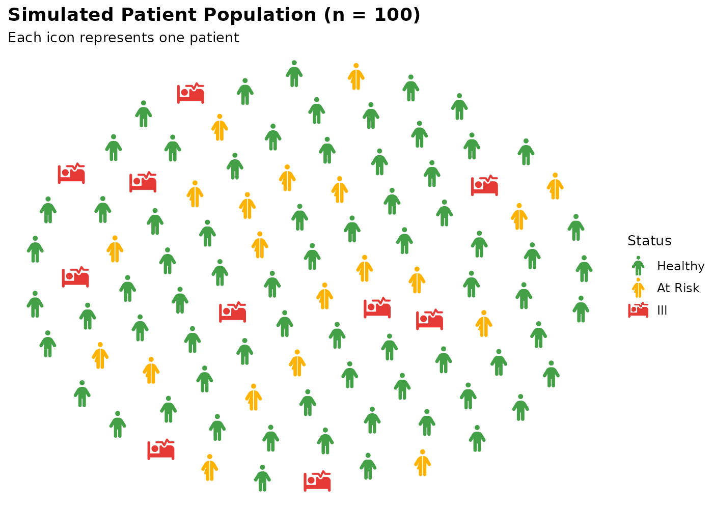

library(ggpop)
library(ggplot2)
library(dplyr)
#>
#> Attaching package: 'dplyr'
#> The following objects are masked from 'package:stats':
#>
#> filter, lag
#> The following objects are masked from 'package:base':
#>
#> intersect, setdiff, setequal, unionExample 1: Population by Sex
A simple two-group population chart using Mexico’s 2024 population data.
df_sex <- data.frame(
sex = c("male", "female"),
n = c(63459580, 67401427)
)
df_sex_proc <- process_data(
data = df_sex,
group_var = sex,
sum_var = n,
sample_size = 100
) %>%
mutate(icon = case_when(
type == "male" ~ "male",
type == "female" ~ "female"
))
ggplot() +
geom_pop(
data = df_sex_proc,
aes(icon = icon, color = type),
size = 2,
dpi = 100,
legend_icons = TRUE
) +
scale_color_manual(values = c("male" = "#1E88E5", "female" = "#D81B60")) +
scale_legend_icon(size = 5) +
theme_pop() +
labs(
title = "Mexico Population by Sex (2024)",
subtitle = "Each icon represents ~1% of the total population",
color = "Sex"
)
#> Downloading dataset...
Example 2: Health Status
A three-group chart showing a simulated patient population broken down by health status.
df_health <- data.frame(
status = c(rep("Healthy", 70), rep("At Risk", 20), rep("Ill", 10)),
icon = c(rep("person", 70), rep("person-half-dress", 20), rep("bed-pulse", 10))
)
df_health$status <- factor(df_health$status,
levels = c("Healthy", "At Risk", "Ill"))
ggplot() +
geom_pop(
data = df_health,
aes(icon = icon, color = status),
size = 2,
dpi = 100,
legend_icons = TRUE
) +
scale_color_manual(values = c(
"Healthy" = "#43A047",
"At Risk" = "#FFB300",
"Ill" = "#E53935"
)) +
scale_legend_icon(size = 5) +
theme_pop() +
labs(
title = "Simulated Patient Population (n = 100)",
subtitle = "Each icon represents one patient",
color = "Status"
)
Example 3: Education Levels
Population chart showing education attainment across four levels.
df_edu <- data.frame(
level = c("No Schooling", "Primary", "Secondary", "University"),
n = c(8, 22, 42, 28)
)
df_edu_proc <- process_data(
data = df_edu,
group_var = level,
sum_var = n,
sample_size = 100
) %>%
mutate(icon = "user")
df_edu_proc$type <- factor(df_edu_proc$type,
levels = c("No Schooling", "Primary", "Secondary", "University"))
ggplot() +
geom_pop(
data = df_edu_proc,
aes(icon = icon, color = type),
size = 2,
dpi = 100,
legend_icons = TRUE
) +
scale_color_manual(values = c(
"No Schooling" = "#EF5350",
"Primary" = "#FFB74D",
"Secondary" = "#42A5F5",
"University" = "#66BB6A"
)) +
scale_legend_icon(size = 5) +
theme_pop() +
labs(
title = "Education Attainment",
subtitle = "Each icon represents 1% of the population",
color = "Level"
)
Example 4: Disease Burden with Dark Theme
A dark-themed chart showing disease categories in a simulated population.
df_disease <- data.frame(
condition = c(rep("Cardiovascular", 32), rep("Cancer", 18),
rep("Respiratory", 14), rep("Diabetes", 12),
rep("Other", 24)),
icon = c(rep("heart-pulse", 32), rep("ribbon", 18),
rep("lungs", 14), rep("syringe", 12),
rep("user", 24))
)
df_disease$condition <- factor(df_disease$condition,
levels = c("Cardiovascular", "Cancer", "Respiratory", "Diabetes", "Other"))
ggplot() +
geom_pop(
data = df_disease,
aes(icon = icon, color = condition),
size = 2,
dpi = 100,
legend_icons = TRUE
) +
scale_color_manual(values = c(
"Cardiovascular" = "#EF5350",
"Cancer" = "#AB47BC",
"Respiratory" = "#42A5F5",
"Diabetes" = "#FFB74D",
"Other" = "#78909C"
)) +
scale_legend_icon(size = 5) +
theme_pop_dark(bg_color = "#0D1B2A", text_color = "white") +
labs(
title = "Disease Burden by Condition",
subtitle = "Simulated population of 100 individuals",
color = "Condition"
)
Example 5: Disability Status with Stroke
Using stroke_width to outline icons for better
visibility and arrange = TRUE to group icons by type.
df_disability <- data.frame(
sex = c("male", "female", "disabled males", "disabled females"),
n = c(46, 44, 5, 5)
)
df_disability_proc <- process_data(
data = df_disability,
group_var = sex,
sum_var = n,
sample_size = 100
) %>%
mutate(icon = case_when(
type == "male" ~ "male",
type == "female" ~ "female",
type == "disabled males" ~ "person-cane",
type == "disabled females" ~ "person-cane"
))
ggplot() +
geom_pop(
data = df_disability_proc,
aes(icon = icon, color = type),
size = 2,
dpi = 100,
arrange = TRUE,
legend_icons = TRUE,
stroke_width = 6
) +
scale_color_manual(
values = c(
"male" = "#1565C0",
"female" = "#AD1457",
"disabled males" = "#0288D1",
"disabled females" = "#F48FB1"
)
) +
scale_legend_icon(size = 5) +
theme_pop() +
labs(
title = "Population by Sex and Disability Status",
subtitle = "Icons outlined with stroke_width = 6",
color = "Group"
)